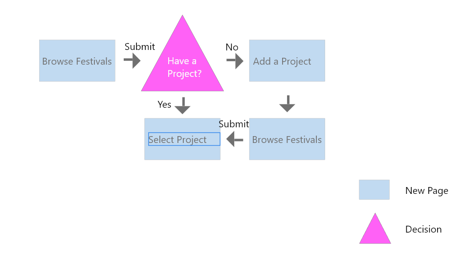
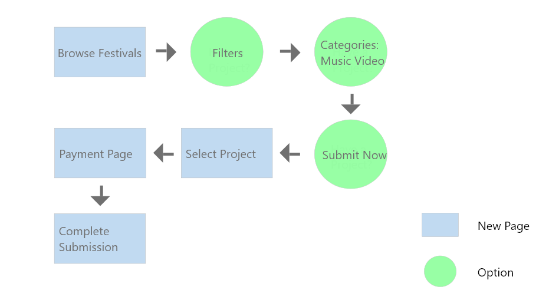
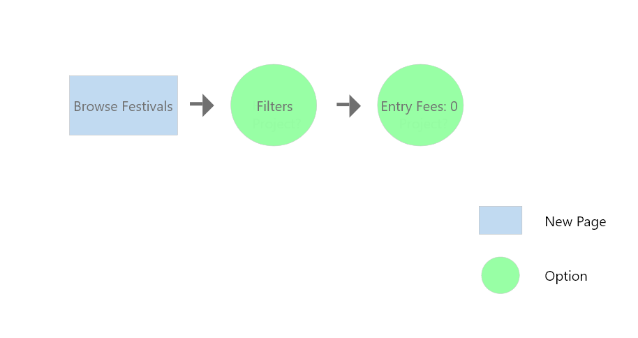

In scenario 1, the Browse Festivals page is used to select the festivals to which the user would like to submit, and then submit. There are two situations: if there is an existing project in the user account, the user can select a project and submit it. If there is no existing project, the user will be asked to add a new project and then return to the Browse Festivals page for selecting a project.

Scenario 2
In Scenario 2, the user can find the Filters column in the Browse Festivals page, and select the Music Video option in Categories, then click Submit, and select the project you want to submit, enter the payment page and complete the submission.

Scenario 3
In scenario 3, users can change the film poster on the same page through View Project or Project File in My Project.

Scenario 4
In scenario 4, similar to scenario 2, the user can select the film festival that can be submitted for free by setting the Entry Fees option in the Filters column to 0.
Scenario 5
In Scenario 5, users can navigate to the submissions page from the navigation bar, select Show Submission Details from the submission page, and click Withdraw from Festivals to cancel the submission.